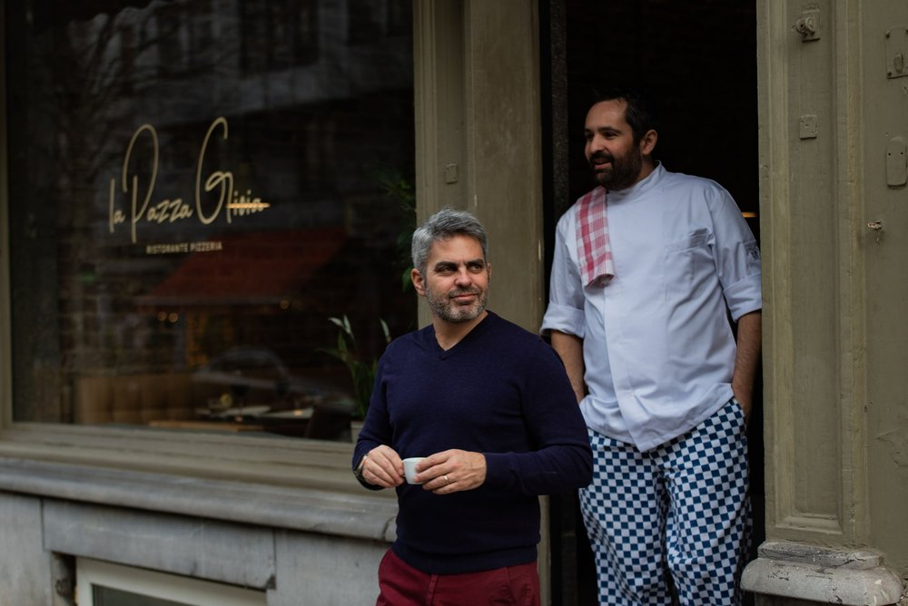
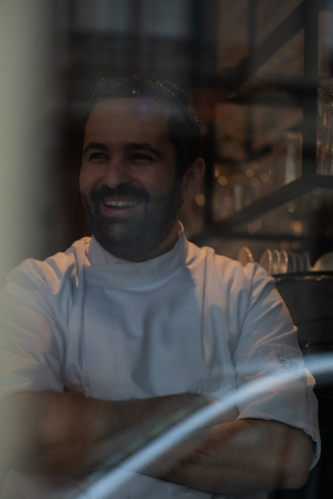
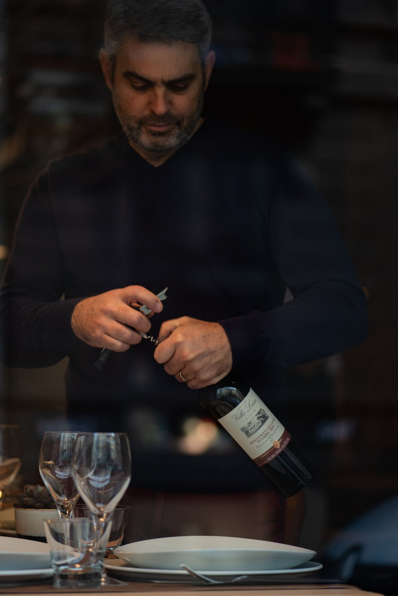

Welcome to La Pazza Gioia: Your Taste of Authentic Italy in Brussels
Experience the true joy of Italian cuisine right here in Brussels. La Pazza Gioia is more than just a new restaurant and pizzeria— it is a culinary passion project committed to bringing genuine, traditional Italian flavors to the city.
We believe that exceptional Italian food starts with exceptional ingredients. That is why we are passionately dedicated to crafting delicious, authentic dishes using only the freshest and highest quality ingredients. From our rich sauces to our perfect pizza dough, every plate is prepared with the care and tradition of Italy.
Our Menu Specialties
At La Pazza Gioia, we bring the vibrant culinary spirit of Southern Italy to your table. Our menu is built upon authenticity, tradition, and innovation, ensuring a memorable dining experience.
The Neapolitan Pizza Tradition
Experience pizza the way it was meant to be. Our pizzas are crafted strictly following the true tradition of Neapolitan pizza, featuring a beautifully soft, slightly charred crust and balanced, high-quality toppings. It's an art form you can taste.


Innovative and Fresh Pastas
Indulge in our range of pasta dishes, where classic techniques meet modern flair. Our pastas are made with fresh and always innovative sauces, designed to surprise and delight your palate while honoring the depth of Italian flavor.
Discover the Panuozzi
For a unique and satisfying treat, you must try our Panuozzi. These are traditional Neapolitan sandwiches made using our exquisite pizza dough.